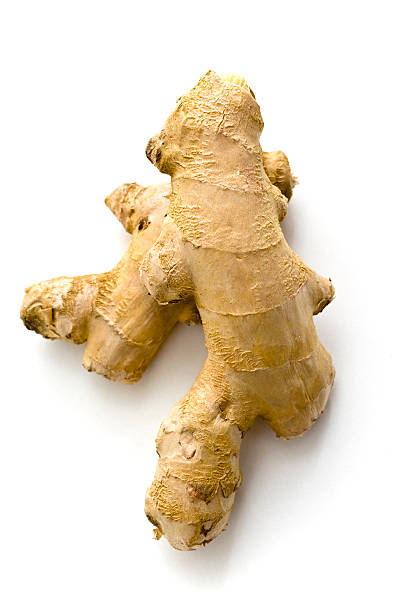

بوابة واحدة لنسختين من دليل أمان الأعشاب: شرح واضح للمريض والزائر، ومرجع أعمق للطبيب والصيدلي. اختَر دورك، ثم اختَر الموضوع الذي تبحث عنه.
01 دليل الاستخدام الآمن02 المونوجراف الأكاديمي↗ تفاعلي ومناسب للموبايل
THE TRAVEL HERBARIUM / 001—003

الزنجبيلZingiber officinale
النعناعMentha × piperita
السيكرانHyoscyamus niger
GATEWAY / 01 · ابدأ من هنا
مين بيقرأ الدليل؟
اختيارك يغيّر نوع الشرح والتفاصيل الظاهرة — وتقدر تبدّله في أي وقت.
من غير حساب أو تخزين للإجابات — اختياراتك تفضل على جهازك أثناء التصفح فقط.
م
الدليل المبسّط للمريض والزائر
اختَر الموضوع الأقرب لسؤالك عشان نرتب لك القراءة.
عرض المريض / الزائر
مهم: المعلومات للتوعية وليست تشخيصًا أو وصفة. الأعشاب قد تتفاعل مع الأدوية، و«طبيعي» لا يعني آمنًا للجميع. اسأل طبيبك أو الصيدلي قبل استخدام مستحضر علاجي.
للممارسة المهنية: ملخص تعليمي مستند إلى الكتيّب والمونوجراف المرفقين، ولا يحل محل النشرات المعتمدة أو تقييم الحالة أو الإرشادات المحلية. السيكران الأسود الخام سام — لا يُقطف أو يُحضّر منزليًا.
مكتبة المريض / اختر مسارك
إيه اللي محتاج تعرفه؟
اختيارك يفتح خلاصة مرتبطة بسؤالك، بدل ما تدور في صفحات طويلة.
اختَر موضوعًا من البطاقات بالأعلى لعرض الخلاصة المناسبة.
قد يخفف الغثيان واضطراب المعدة عند بعض الناس؛ تأثيره ليس واحدًا عند الجميع.
انتبه: قد يزيد قابلية النزيف مع أدوية السيولة وبعض المسكنات، وقد لا يناسب حصوات المرارة. المكملات المركزة قبل الجراحة تحتاج مراجعة الطبيب.
الخطوة الآمنة: اذكر للصيدلي كل أدويتك وأي حساسية معروفة. لا توقف دواءً موصوفًا من نفسك.
02 / AROMATIC OIL
النعناع الفلفلي
Mentha × piperita
رائحته قد تنعش وتخفف الغثيان عند بعض البالغين، لكن طريقة الاستخدام والحالة الصحية تفرق.
انتبه: زيت النعناع أو المينثول قرب وجه أو أنف الرضيع قد يسبب تشنجًا خطيرًا في الحنجرة والتنفس. وقد يزيد المينثول الارتجاع والحموضة.
الخطوة الآمنة: أبعد الزيت تمامًا عن الرضع، ولا تضعه داخل الأنف أو قرب العين. استشر الصيدلي في حالة الارتجاع أو استخدام أدوية مزمنة.
03 / HIGH RISK
السيكران الأسود
Hyoscyamus niger
نبات سام عالي الخطورة؛ ليس عشبة منزلية، ولا يجوز قطفه أو غليه أو استخدامه خامًا.
تحذير قاطع: السيكران الخام سام، والفرق بين تأثير القلويدات والسمّية ضيق. لا تستخدم النبات أو البذور أو أي وصفة منزلية.
الخطوة الآمنة: أي دواء يحتوي مادة مضادة للكولين لا يُستخدم إلا بوصفة ومراجعة مختص. عند ابتلاع النبات أو ظهور تشوش شديد أو خفقان أو صعوبة تنفس، اطلب الطوارئ فورًا.
فحص أمان سريع قبل الاستخدام
علّم «نعم» على أي نقطة تنطبق عليك — لا نرسل ولا نخزن أي إجابة.
فحص توعوي فقط
ابدأ من هنا: راجع النشرة، ولا تستخدم السيكران الخام. إذا لم تكن متأكدًا، اسأل صيدليًا قبل اختيار أي مستحضر.
نصيحة غير دوائية قد تساعد: اجلس قرب نافذة أو في المقعد الأمامي، انظر إلى الأفق، قلّل القراءة واستخدام الهاتف، واختر وجبة خفيفة وتهوية جيدة.
المرجع الأكاديمي / Pharmacognosy & Phytotherapy
من التعريف النباتي إلى قرار السلامة
اختَر تبويبًا للمونوجراف أو المقارنة أو التداخلات. المحتوى الموجز أدناه يعيد تنظيم الكتيّب الأكاديمي المرفق.
جدول القرار السريع
ملخص للنبات والجزء المستخدم، الهدف الدوائي، وخطر السلامة الأبرز.
النبات
الجزء / الشكل الوارد
آلية أو دور محتمل
أهم محدد أمان
الزنجبيل Zingiber officinale
الريزوم؛ مستحضرات فموية
Gingerols: تثبيط 5‑HT₃ غير تنافسي؛ تعديل NK‑1؛ تأثير محيطي هضمي.
خطر النزيف والتداخلات مع مضادات التخثر/الصفيحات وNSAIDs؛ الحذر مع حصوات المرارة.
النعناع الفلفلي Mentha × piperita
الأوراق والزيت الطيار؛ الاستنشاق أو مستحضرات معوية بحسب المنتج
Menthol: تنشيط TRPM8 وحصر قنوات Ca²⁺ من النمط L؛ ارتخاء العضلات الملساء.
الجزء المستخدم: ريزوم كامل أو مقشّر ومجفف (Zingiberis rhizoma).
ريزوم متفرع ومضغوط جانبيًا؛ خلايا أوليورزين بإفراز أصفر-بني، ألياف لحائية غير ملجننة ومقسمة، وحبيبات نشا بيضاوية مفلطحة ذات hilum طرفي لا مركزي.
مواصفات USP المذكورة في المونوجراف
Gingerols وgingerdiones ≥ 0.8%؛ الزيت الطيار ≥ 1.8 mL/100 g؛ النشا ≥ 42%؛ وshogaols ≤ 0.18%. ارتفاع shogaols قد يشير تحليليًا إلى التجفيف الحراري أو التقادم.
الكيمياء النباتية والنشاط
Gingerols / Shogaols
[6]-Gingerol هو الأبرز ضمن arylalkanones الفينولية. نزع الماء يُنتج shogaols (α,β-unsaturated ketones)، ذات لذع ونفاذية أعلى للدماغ بحسب المرجع.
Zingerone / paradols / الزيت الطيار
التغير الحراري قد ينتج zingerone وparadols. الزيت الطيار (1.5–3%) يضم α-zingiberene، إلى جانب sesquiterpenes ومونوتربينات.
الديناميكا والحرائك
تثبيط غير تنافسي لمستقبلات 5‑HT₃ المعوية/المبهمية، مع تعديل NK‑1 (substance P) وتأثير مسكاريني ضعيف كما يذكر المونوجراف.
تصف المادة المرجعية امتصاصًا فمويًا سريعًا، وذروة تركيز [6]-gingerol في البلازما خلال 10–45 دقيقة، ثم اقترانًا كبديًا/معويًا بالغلوكورونيد والكبريتات.
آثار محتملة على اضطراب إيقاع المعدة وارتفاع vasopressin المرتبطين بالغثيان؛ لا يعني ذلك فعالية مؤكدة لكل نوع من دوار الحركة.
الدليل السريري كما أورده المونوجراف
يذكر المصدر تجربة بحر مفتوح (Grøntved, 1988) أبلغت عن حماية من القيء بنسبة 72% وانخفاض العرق البارد، مقابل اختبار كرسي دوّار (Stewart, 1991) لم يُظهر حماية دهليزية مركزية مماثلة بالزنجبيل. تُقرأ هذه النتائج في سياقها ولا تُعمّم على كل مريض أو كل نوع من دوار الحركة.
السلامة السريرية
خطر نزف محتمل: Warfarin، dabigatran، aspirin، clopidogrel، وNSAIDs؛ واحتمال تعزيز خفض سكر الدم مع أدوية السكري.
الحذر/التقييم عند اضطرابات النزف، حصوات المرارة، الجراحة، الحمل أو الرضاعة، أو تحسس الزنجبيل.
آثار جانبية ممكنة: حرقة شرسوفية، إسهال خفيف وتهيج الفم/الحلق.
يوثّق المصدر EMA dose مقداره 1,000 mg قبل السفر بساعة؛ هذه معلومة من المونوجراف وليست توصية جرعة فردية — تُراجع النشرة والملاءمة السريرية.
Monograph II · النعناع الفلفلي
Mentha × piperita L. · الفصيلة الشفوية Lamiaceae · هجين M. aquatica × M. spicata
التشخيص النباتي
ساق رباعية الزوايا، أوراق معنّقة مسننة، ثغور diacytic، وشعيرات غدية labiate ذات 8 خلايا تخزن الزيت الطيار؛ الزيت في الورقة المجففة 1.2–3.9% v/w بحسب المصدر.
Menthol: ناهض TRPM8، وحاصر تنافسي لقنوات Ca²⁺ من النمط L؛ قد يرخّي العضلات الملساء في الجهاز الهضمي والـLES.
الاستنشاق ينشّط مسارات شمية/ثلاثية التوائم وقد يخفف الإحساس بالغثيان؛ يختلف ذلك عن فعالية المستحضرات الفموية وتعرّضها المعوي.
Menthofuran وpulegone يمكن تنشيطهما استقلابيًا بوساطة CYP450 إلى نواتج تفاعلية؛ لذلك تُقيّد نسبهما في الزيت الدستوري.
الحرائك والتحذيرات
الرضع: تطبيق الزيت أو المينثول قرب الوجه/المنخرين قد يحفز laryngospasm أو انقطاعًا انعكاسيًا في التنفس؛ تحذير عالي الأهمية. مستحضرات الكبسولات الفموية غير مناسبة للأطفال الصغار وفق حدود المصدر.
تثبيط حمض المعدة (PPI/H₂ blockers/مضادات الحموضة) قد يغيّر ذوبان الغلاف المعوي لبعض المنتجات، مع إطلاق معدي مبكر وتفاقم الحرقة؛ يختلف باختلاف صيغة المنتج.
الارتجاع الشديد/الفتق الحجابي، حصوات المرارة أو التهاب القنوات الصفراوية، تحسس menthol، والحمل/الرضاعة تستلزم مراجعة المنتج والنشرة.
يذكر التقييم الأوروبي احتمال تثبيط عكوس لـCYP3A4 مع الزيت الفموي، مع ارتفاع تعرّض felodipine وcyclosporine؛ تُراجع التداخلات على مستوى المنتج والجرعة الفعلية.
سمية الجرعات العالية قد تشمل اضطرابًا هضميًا وعصبيًا وقلبيا؛ الحذر مع مرضى الربو أو فرط استجابة المجرى الهوائي.
Monograph III · السيكران الأسود
Hyoscyamus niger L. · الفصيلة الباذنجانية Solanaceae · مصدر قلويدات تروبان عالية الخطورة
حالة الاستخدام: خطر مرتفع
النبات الخام سام وغير مناسب للاستعمال العشبي المنزلي أو تحضير الشاي/المغلي. لا يُجمع أو يُطحن أو يُتناول. لا تُستنتج منه جرعة أو توصية؛ أي دواء معياري يتطلب تقييمًا سريريًا ووصفة حسب المستحضر المعتمد.
الهوية النباتية والكيميائية
الأوراق المجففة مذكور لها 0.045–0.14%، والبذور 0.5–0.6% من القلويدات. Hyoscyamine قد يتراكم إلى atropine؛ scopolamine يحمل 6,7-β-epoxide. تشخيص مجهري: أوراق ذات شعيرات غدية وثغور anisocytic وبلورات أوكسالات الكالسيوم؛ بذور كلوية منقّرة.
الآلية والتخليق الحيوي
مضادات muscarinic مركزية وطرفية؛ نفاذ scopolamine إلى BBB وحصر M₁/M₃ الدهليزي يفسران التأثير المركزي، كما يصف المصدر.
تُصنّف القلويدات ذات مجال علاجي ضيق؛ لا يناسب الاعتماد على المادة الخام تفاوت المحتوى النباتي والتركيز.
الموانع والسمّية
مخاطر شديدة مع narrow-angle glaucoma، تضخم البروستاتا/احتباس البول، انسداد الجهاز الهضمي، myasthenia gravis، اضطرابات نظم القلب/أمراض قلب وعائية، والحمل والرضاعة والأطفال وكبار السن؛ يورد المصدر أيضًا متلازمة داون.
التسمم المضاد للكولين: جفاف الفم، توسع الحدقة/زغللة، تسرع القلب، الإمساك واحتباس البول؛ الشديد قد يتطور إلى هياج/هذيان، ارتفاع حرارة، اختلاجات أو غيبوبة.
تحتاج أي أعراض تسمم أو ابتلاع للنبات إلى تقييم إسعافي فوري؛ لا تُدار منزليًا ولا تنتظر تحسن الأعراض.
الموانع والتداخلات: نقطة الفحص قبل أي قرار
خريطة مختصرة للمخاطر التي يجب مراجعتها في التاريخ الدوائي والمرضي، من دون افتراض أن المستحضرات متكافئة.
مضادات الكولين، مضادات الهيستامين الجيل الأول، TCAs، مضادات الذهان منخفضة الفعالية، sympathomimetics
تأثيرات تراكمية: احتباس، هذيان، تسرع قلب/حرارة؛ تجنب القيادة والآلات. الخام سام ولا يُستخدم.
فئات تحتاج حذرًا مضاعفًا
الأطفال، كبار السن، الحمل والرضاعة، تعدد الأدوية، وضعف وظائف الأعضاء — تفرض مراجعة منتج-محددة وتقييمًا مباشرًا قبل التوصية.
إرشاد المريض
اسأل عن الشكل والطريق والجرعة المدوّنة، الحساسية، الأمراض، كل الأدوية والمكملات، والقيادة. وضّح أن عدم ذكر تداخل في هذا الملخص لا يعني غيابه.
المراجع الواردة في الكتيّبين:
EMA/HMPC: monographs and assessment reports for Zingiber officinale and Mentha × piperita; USP quality standards.
NCCIH/NIH; Memorial Sloan Kettering Cancer Center (MSKCC); StatPearls / PubMed: scopolamine and tropane alkaloids.
Lien et al., Am J Physiol (2003); Walstab et al., Neurogastroenterol Motil (2013); Grøntved et al. (1988); Stewart et al. (1991); Zhang et al., PNAS (2004).
تلخيص وتبويب للمحتوى المرفق: Phytotherapy Safety Booklet, Pharmacognosy MNU وPhytotherapy Academic Monograph, Faculty MNU. ارجع إلى المصادر الأصلية والنشرات المعتمدة للتحقق من التفاصيل.